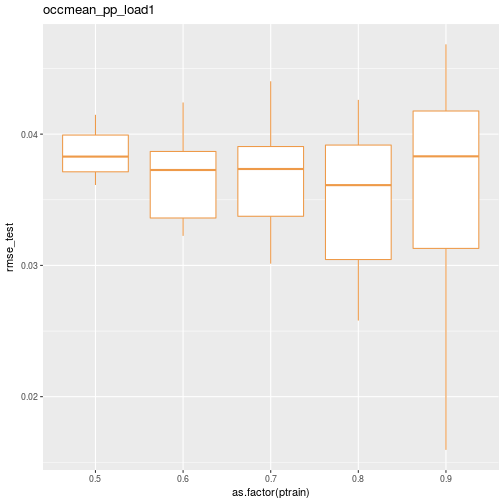
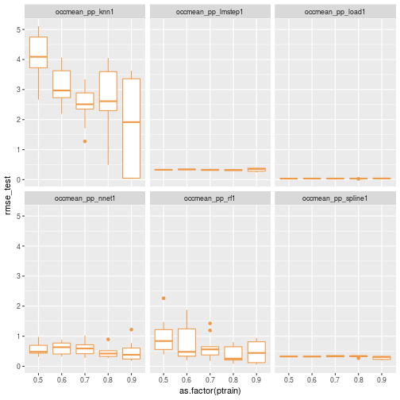
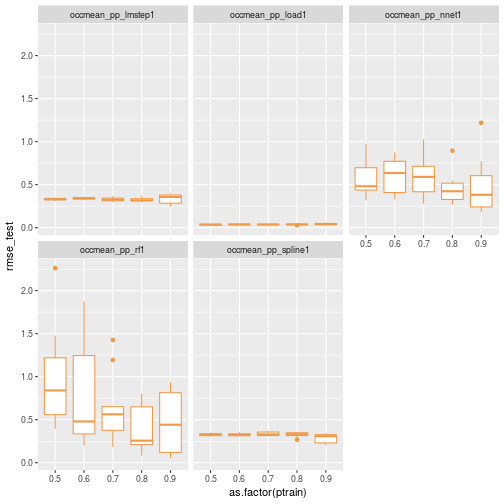

Comparing predictive model performance using caret - Part 3: Put it all together¶
In Part 1 of this series of posts, we used caret to train and test a few simulation metamodels
using data from a series of simulation experiments on a simplified obstetrical patient flow
network. In doing so, a number of questions popped up which suggested we needed a way to
easily automate a number of partition, train, predict, summarize cycles with caret.
In Part 2 we created a simple function named caret_ptps to facilitate automating the process of partitioning a dataset, training a model, making predictions and summarizing the results. This function
takes a number of arguments related to the dataframe to use, a model formula, a modeling method, and values to control the model training and testing phases.
caret_ptps <- function(model_formula, data, method, scenario="",
pct_train_val=0.6, partition.times=1,
control=trainControl(method="None"),
seed.partition=NULL, seed.resample=NULL,
...){
# Container list for results
listsize <- length(pct_train_val) * partition.times
results_for_df <- vector("list", listsize)
results_objs <- vector("list", listsize)
# Get y variable name from formula object. The ~ is [[1]], LHS is [[2]] and RHS[[3]].
y.name <- deparse(model_formula[[2]])
# Outer loop for training set size
itemnum <- 0
for (pct_train in pct_train_val){
# Create partitions for this pct_train.
trainrecs <- createDataPartition(data[[y.name]], p = pct_train,
list = FALSE, times = partition.times)
# Loop over data partitions
for (s in seq(1,partition.times)){
modeling_test_df <- data[-trainrecs[,s], ]
modeling_train_df <- data[trainrecs[,s], ]
# Train the model
fit <- train(model_formula,
data = modeling_train_df,
method = method,
trControl = control,
...)
# Make predictions for the test set
pred <- predict(fit, newdata=modeling_test_df)
# Gather actual and predicted values
train_y_actual <- fit$trainingData$.outcome
train_y_pred <- fitted.values(fit)
test_y_actual <- modeling_test_df[, y.name]
test_y_pred <- pred
# Compute RMSE for train and test
rmse_train <- rmse(train_y_actual, train_y_pred)
rmse_test <- rmse(test_y_actual, test_y_pred)
# Store key items in lists for later processing
itemnum <- itemnum + 1
result_for_df <- list(ptrain = pct_train, sample = s, scenario = scenario,
rmse_train = rmse_train,
rmse_test = rmse_test)
results_for_df[[itemnum]] <- result_for_df
result_objs <- list(test_y_actual = test_y_actual,
test_y_pred = test_y_pred,
trained_model = fit)
results_objs[[itemnum]] <- result_objs
}
}
results_list <- list(rmse=results_for_df, fitpred=results_objs)
return(results_list)
}
Now we are ready to use this function as we iterate over a dataframe of scenarios to analyze with caret. Part 1 ended with:
Just this little bit of copy, paste, editing was frought with errors and tediously repititious. > > Clearly we need to encapsulate this process in one or more functions. Ideally I also wanted to be able to create analysis scenarios defined by a bunch of attributes that I could store in a metadata file. To make this concrete, here’s a little csv file illustrating what I wanted to do.
scenarios_test_df <- read.csv(file="data/scenarios_test.csv")
knitr::kable(scenarios_test_df)
scen |
model_formula |
data |
method |
scenario |
pct_train_val |
partition.times |
control |
seed.partition |
seed.resample |
extra_args |
|---|---|---|---|---|---|---|---|---|---|---|
1 |
occmean_pp ~ load_pp |
obsim_df |
lm |
occmean_pp_load1 |
seq(0.5,0.9,0.1) |
10 |
fitControl |
231 |
37 |
|
2 |
occmean_pp ~ lam_pp + alos_pp + cap_pp + tot_c_rate |
obsim_df |
lmStepAIC |
occmean_pp_lmstep1 |
seq(0.5,0.9,0.1) |
10 |
fitControl |
231 |
37 |
|
3 |
occmean_pp ~ lam_pp + alos_pp + cap_pp + tot_c_rate |
obsim_df |
nnet |
occmean_pp_nnet1 |
seq(0.5,0.9,0.1) |
10 |
fitControl |
231 |
37 |
linout=TRUE |
4 |
occmean_pp ~ lam_pp + alos_pp + cap_pp + tot_c_rate |
obsim_df |
rf |
occmean_pp_rf1 |
seq(0.5,0.9,0.1) |
10 |
fitControl |
231 |
37 |
|
5 |
occmean_pp ~ lam_pp + alos_pp + cap_pp + tot_c_rate |
obsim_df |
knn |
occmean_pp_knn1 |
seq(0.5,0.9,0.1) |
10 |
fitControl |
231 |
37 |
preProcess=c(‘center’, ‘scale’) |
6 |
occmean_pp ~ lam_pp + alos_pp + cap_pp + tot_c_rate |
obsim_df |
gamSpline |
occmean_pp_spline1 |
seq(0.5,0.9,0.1) |
10 |
fitControl |
231 |
37 |
Obviously, when we read this csv file into an R dataframe, we are going to end up with
some numeric fields and some string fields. Well, the string fields will come in as
factors by default but we can use the stringsAsFactors=FALSE argument to prevent this.
scenarios_test_df <- read.csv(file="data/scenarios_test.csv",
stringsAsFactors = FALSE)
str(scenarios_test_df)
## 'data.frame': 6 obs. of 11 variables:
## $ scen : int 1 2 3 4 5 6
## $ model_formula : chr "occmean_pp ~ load_pp" "occmean_pp ~ lam_pp + alos_pp + cap_pp + tot_c_rate" "occmean_pp ~ lam_pp + alos_pp + cap_pp + tot_c_rate" "occmean_pp ~ lam_pp + alos_pp + cap_pp + tot_c_rate" ...
## $ data : chr "obsim_df" "obsim_df" "obsim_df" "obsim_df" ...
## $ method : chr "lm" "lmStepAIC" "nnet" "rf" ...
## $ scenario : chr "occmean_pp_load1" "occmean_pp_lmstep1" "occmean_pp_nnet1" "occmean_pp_rf1" ...
## $ pct_train_val : chr "seq(0.5,0.9,0.1)" "seq(0.5,0.9,0.1)" "seq(0.5,0.9,0.1)" "seq(0.5,0.9,0.1)" ...
## $ partition.times: int 10 10 10 10 10 10
## $ control : chr "fitControl" "fitControl" "fitControl" "fitControl" ...
## $ seed.partition : int 231 231 231 231 231 231
## $ seed.resample : int 37 37 37 37 37 37
## $ extra_args : chr "" "" "linout=TRUE" "" ...
One of our primary challenges will be to use string representations or names of things like formulas, dataframes, control objects and R expressions within R code to get at the actual underlying objects. Let’s start by considering a few specific cases.
First, let’s read in the dataset needed for the rest of this post.
obsim_df <- read.csv(file="data/obsim_example.csv")
names(obsim_df)[1] <- "scenario"
# Shorten a few column names
names(obsim_df)[13] <- "occmean_ldr"
names(obsim_df)[14] <- "occp95_ldr"
names(obsim_df)[15] <- "occmean_pp"
names(obsim_df)[16] <- "occp95_pp"
Load some libraries.
library(ggplot2)
library(dplyr)
library(Metrics)
library(caret)
R formulas to text and back¶
The scenarios_test_df dataframe has text values that look like R formula objects.
simple_formula_str <- scenarios_test_df$model_formula[1]
simple_formula_str
## [1] "occmean_pp ~ load_pp"
class(simple_formula_str)
## [1] "character"
An R formula object is not a string. It’s an R formula object.
simple_formula <- occmean_pp ~ load_pp
simple_formula
## occmean_pp ~ load_pp
## <environment: 0x1640188>
class(simple_formula)
## [1] "formula"
Many R functions take formula objects as arguments. For example, lm:
lm(simple_formula, data = obsim_df)
##
## Call:
## lm(formula = simple_formula, data = obsim_df)
##
## Coefficients:
## (Intercept) load_pp
## 0.01363 1.00295
As you might have guessed, lm probably will do the right thing if we pass in a
string that can be coerced to a valid R formula.
lm(simple_formula_str, data = obsim_df)
##
## Call:
## lm(formula = simple_formula_str, data = obsim_df)
##
## Coefficients:
## (Intercept) load_pp
## 0.01363 1.00295
Great. However, we are using caret which supports over 200 different modeling techniques. Will caret work if its train function is given a formula string instead of the formula it expects?
First we need to partition the dataset and setup our training control object.
train_test_seed <- 233
resample_seed <- 67
pct_train <- 125/150
set.seed(train_test_seed)
trainrecs <- createDataPartition(obsim_df$occmean_pp, p = pct_train,
list = FALSE, times = 1)
obsim_train_df <- obsim_df[trainrecs, ]
obsim_test_df <- obsim_df[-trainrecs, ]
fitControl <- trainControl(## 5-fold CV
method = "repeatedcv",
number = 5,
## repeated ten times
repeats = 10)
First we’ll explicitly pass in a formula object to make sure everything is working fine.
set.seed(resample_seed)
train_load1 <- train(occmean_pp ~ load_pp, data = obsim_train_df,
method = "lm",
trControl = fitControl)
coef(summary(train_load1))
## Estimate Std. Error t value Pr(>|t|)
## (Intercept) 0.01324359 0.0067156390 1.972052 0.05082951
## load_pp 1.00299005 0.0001896324 5289.128771 0.00000000
Now confirm that we can pass in a formula object variable. Of course we can.
set.seed(resample_seed)
train_load1 <- train(simple_formula, data = obsim_train_df,
method = "lm",
trControl = fitControl)
coef(summary(train_load1))
## Estimate Std. Error t value Pr(>|t|)
## (Intercept) 0.01324359 0.0067156390 1.972052 0.05082951
## load_pp 1.00299005 0.0001896324 5289.128771 0.00000000
What if we pass in the string version of the formula?
set.seed(resample_seed)
train_load1_str <- train(simple_formula_str, data = obsim_train_df,
method = "lm",
trControl = fitControl)
## Error in train.default(simple_formula_str, data = obsim_train_df, method = "lm", : argument "y" is missing, with no default
Does not work.
Turns out to be simple to be simple to create a formula object from a string using
R’s as.formula function.
simple_formula_from_str <- as.formula(simple_formula_str)
class(simple_formula_from_str)
## [1] "formula"
set.seed(resample_seed)
train_load1 <- train(simple_formula_from_str, data = obsim_train_df,
method = "lm",
trControl = fitControl)
coef(summary(train_load1))
## Estimate Std. Error t value Pr(>|t|)
## (Intercept) 0.01324359 0.0067156390 1.972052 0.05082951
## load_pp 1.00299005 0.0001896324 5289.128771 0.00000000
Success. What about the other direction: formula –> string. While that feels like it should be simple, there are complications. Let’s try the obvious thing, the as.character function.
as.character(simple_formula)
## [1] "~" "occmean_pp" "load_pp"
Looks like we get a vector of strings. Interesting. The left hand side of the equation is the second element and the right hand side, the third. That will come in handy later when we need to pluck the response variable name from a formula. Doesn’t solve the immediate problem, but useful.
A little searching led to the R deparse function. For example, see https://stackoverflow.com/questions/14671172/how-to-convert-r-formula-to-text.
deparse(simple_formula)
## [1] "occmean_pp ~ load_pp"
You do need to be a little careful in that the default behavior for deparse will
start inserting line breaks after 60 characters. No problem, we can specify a larger limit before
line breaking using the width.cutoff argument. There’s also an nlines argument that specifies
the maximum number of lines to produce.
deparse(simple_formula, width.cutoff = 500, nlines = 1)
## [1] "occmean_pp ~ load_pp"
R dataframes from string version of their variable name¶
The scenarios_test_df dataframe has a column containing the name of the dataframe we want to use for
our caret work.
dfname_str <- scenarios_test_df$data[1]
dfname_str
## [1] "obsim_df"
Let’s play a similar game with lm as we did with the formula.
lm(simple_formula, data=dfname_str)
## Error in eval(predvars, data, env): invalid 'envir' argument of type 'character'
Not that we really expected R to coerce a string that just happens to coincide with a dataframe name
in the current environment, but worth a try. Instead, we must use the get function.
lm(simple_formula, data=get(dfname_str))
##
## Call:
## lm(formula = simple_formula, data = get(dfname_str))
##
## Coefficients:
## (Intercept) load_pp
## 0.01363 1.00295
R expressions from strings¶
One of the things we want to experiment with is the percentage of cases to
allocate to the training data set. In the example here, we see that the pct_train_val column contains the following string representing a sequence.
scenarios_test_df$pct_train_val[1]
## [1] "seq(0.5,0.9,0.1)"
So, how can we generate the actual sequence from this string?
seq(0.5,0.9,0.1)
## [1] 0.5 0.6 0.7 0.8 0.9
One approach, though seemingly frowned upon, relies on a combination of the
parse and eval functions. We use parse to create an R expression from
a string and eval to evaluate it. Note that parse is usually used with
files and so we need to use the text= argument to give it a string to parse.
seq_str <- "seq(0.5,0.9,0.1)"
parse(text = seq_str)
## expression(seq(0.5, 0.9, 0.1))
Now, evaluate it.
eval(parse(text = seq_str))
## [1] 0.5 0.6 0.7 0.8 0.9
See https://stackoverflow.com/questions/7836972/use-character-string-as-function-argument for some discussion of this. One of the answers includes this gem:
library(fortunes)
fortune(106)
##
## If the answer is parse() you should usually rethink the question.
## -- Thomas Lumley
## R-help (February 2005)
Calling functions with list of arguments¶
Now we want to call the caret_ptps function using the arguments stored in a row
of the dataframe scenarios_test_df. Consider the first scenario.
print(scenarios_test_df[1,])
## scen model_formula data method scenario
## 1 1 occmean_pp ~ load_pp obsim_df lm occmean_pp_load1
## pct_train_val partition.times control seed.partition seed.resample
## 1 seq(0.5,0.9,0.1) 10 fitControl 231 37
## extra_args
## 1
Let’s put these values from the first scenario row into a set of variables. For some of the fields we’ll use one of the techniques discussed above to convert it from a string to an R object or R expression.
# Grab first row
argdf <- scenarios_test_df[1,]
model_formula <- as.formula(argdf$model_formula)
data <- get(argdf$data)
method <- argdf$method
scenario <- argdf$scenario
pct_train_val <- eval(parse(text=argdf$pct_train_val))
partition.times <- argdf$partition.times
control <- get(argdf$control)
seed.partition <- argdf$seed.partition
seed.resample <- argdf$seed.resample
# For now, extra_args is left as a string. We'll deal with this complication later in
# this post.
extra_args <- ifelse(length(argdf$extra_args)>0, argdf$extra_args, NULL)
Now we can use the R function do.call to call caret_ptps with a list of named
elements corresponding to the function arguments. Pretty powerful. See the documentation for more info. Start by creating a list containing the arguments to pass.
arglist <- list(model_formula=model_formula, data=data, method=method, scenario=scenario,
pct_train_val=pct_train_val, partition.times=partition.times,
control=control, seed.partition=seed.partition,
seed.resample=seed.resample)
str(arglist)
## List of 9
## $ model_formula :Class 'formula' language occmean_pp ~ load_pp
## .. ..- attr(*, ".Environment")=<environment: 0x1640188>
## $ data :'data.frame': 150 obs. of 16 variables:
## ..$ scenario : int [1:150] 1 2 3 4 5 6 7 8 9 10 ...
## ..$ lam_ldr : num [1:150] 2.74 2.74 2.74 2.74 2.74 ...
## ..$ alos_ldr : num [1:150] 0.5 0.5 0.5 0.5 0.5 0.5 0.5 0.5 0.5 0.5 ...
## ..$ cap_ldr : int [1:150] 4 4 4 3 3 3 2 2 2 8 ...
## ..$ load_ldr : num [1:150] 1.37 1.37 1.37 1.37 1.37 ...
## ..$ rho_ldr : num [1:150] 0.342 0.342 0.342 0.457 0.457 ...
## ..$ lam_pp : num [1:150] 2.74 2.74 2.74 2.74 2.74 ...
## ..$ alos_pp : num [1:150] 2.2 2.2 2.2 2.2 2.2 2.2 2.2 2.2 2.2 2.2 ...
## ..$ cap_pp : int [1:150] 12 10 9 12 10 9 12 10 9 29 ...
## ..$ load_pp : num [1:150] 6.03 6.03 6.03 6.03 6.03 ...
## ..$ rho_pp : num [1:150] 0.502 0.603 0.67 0.502 0.603 ...
## ..$ tot_c_rate : num [1:150] 0.2 0.2 0.2 0.2 0.2 0.2 0.2 0.2 0.2 0.2 ...
## ..$ occmean_ldr: num [1:150] 1.37 1.43 1.52 1.32 1.36 ...
## ..$ occp95_ldr : num [1:150] 3.68 3.99 4 3 3 ...
## ..$ occmean_pp : num [1:150] 6.05 6.02 6.02 6.02 6.03 ...
## ..$ occp95_pp : num [1:150] 10.2 10 9 10.2 10 ...
## $ method : chr "lm"
## $ scenario : chr "occmean_pp_load1"
## $ pct_train_val : num [1:5] 0.5 0.6 0.7 0.8 0.9
## $ partition.times: int 10
## $ control :List of 26
## ..$ method : chr "repeatedcv"
## ..$ number : num 5
## ..$ repeats : num 10
## ..$ search : chr "grid"
## ..$ p : num 0.75
## ..$ initialWindow : NULL
## ..$ horizon : num 1
## ..$ fixedWindow : logi TRUE
## ..$ verboseIter : logi FALSE
## ..$ returnData : logi TRUE
## ..$ returnResamp : chr "final"
## ..$ savePredictions : logi FALSE
## ..$ classProbs : logi FALSE
## ..$ summaryFunction :function (data, lev = NULL, model = NULL)
## ..$ selectionFunction: chr "best"
## ..$ preProcOptions :List of 3
## .. ..$ thresh : num 0.95
## .. ..$ ICAcomp: num 3
## .. ..$ k : num 5
## ..$ sampling : NULL
## ..$ index : NULL
## ..$ indexOut : NULL
## ..$ indexFinal : NULL
## ..$ timingSamps : num 0
## ..$ predictionBounds : logi [1:2] FALSE FALSE
## ..$ seeds : logi NA
## ..$ adaptive :List of 4
## .. ..$ min : num 5
## .. ..$ alpha : num 0.05
## .. ..$ method : chr "gls"
## .. ..$ complete: logi TRUE
## ..$ trim : logi FALSE
## ..$ allowParallel : logi TRUE
## $ seed.partition : int 231
## $ seed.resample : int 37
Now we can call caret_ptps.
results_scenario1 <- do.call(caret_ptps, arglist)
Pull out the first element and convert to a dataframe. Display the head and tail of the results summary.
results_for_df <- results_scenario1[[1]]
results_df <- do.call(rbind,lapply(results_for_df, data.frame))
print(head(results_df))
## ptrain sample scenario rmse_train rmse_test
## 1 0.5 1 occmean_pp_load1 0.03235569 0.04107803
## 2 0.5 2 occmean_pp_load1 0.03145381 0.04147086
## 3 0.5 3 occmean_pp_load1 0.03713965 0.03612767
## 4 0.5 4 occmean_pp_load1 0.03503569 0.03825939
## 5 0.5 5 occmean_pp_load1 0.03663228 0.03691576
## 6 0.5 6 occmean_pp_load1 0.03609778 0.03719239
print(tail(results_df))
## ptrain sample scenario rmse_train rmse_test
## 45 0.9 5 occmean_pp_load1 0.03607652 0.04242421
## 46 0.9 6 occmean_pp_load1 0.03713654 0.02999180
## 47 0.9 7 occmean_pp_load1 0.03656720 0.03718645
## 48 0.9 8 occmean_pp_load1 0.03673756 0.03520638
## 49 0.9 9 occmean_pp_load1 0.03587340 0.04446830
## 50 0.9 10 occmean_pp_load1 0.03788447 0.01594970
Here’s a quick box plot of the test RMSE distribution by the percentage of cases allocated to the training data.
ggplot(data=results_df) + geom_boxplot(aes(x=as.factor(ptrain), y=rmse_test), colour="tan2") + ggtitle(scenario)

For convenience, I created a helper function to create a list of named arguments from
a single row of a dataframe. At the bottom of the function you’ll see that it includes
code to deal with one extra argument to be passed on to the caret train function. For
example, for the nnet method we need to give the extra argument linout=TRUE to
tell nnet to create regression output instead of classification output. Similarly,
for knn we need preProcess=c('center', 'scale'). It would be easy to extend our
function to handle any number of additional arguments.
caret_ptps_arglister <- function(df){
# Just using the first row, no matter how many rows in data passed in.
# Hacky but fine for now.
argdf <- df[1,]
model_formula <- as.formula(argdf$model_formula)
data <- get(argdf$data)
method <- argdf$method
scenario <- argdf$scenario
pct_train_val <- eval(parse(text=argdf$pct_train_val))
partition.times <- argdf$partition.times
control <- get(argdf$control)
seed.partition <- argdf$seed.partition
seed.resample <- argdf$seed.resample
extra_args <- ifelse(length(argdf$extra_args)>0, argdf$extra_args, NULL)
arglist <- list(model_formula=model_formula, data=data,
method=method, scenario=scenario,
pct_train_val=pct_train_val, partition.times=partition.times,
control=control, seed.partition=seed.partition,
seed.resample=seed.resample)
# For now assuming only one additional argument specified.
if (!is.null(extra_args)) {
arg <- strsplit(extra_args, "=")
argname <- arg[[1]][1]
argval <- eval(parse(text=arg[[1]][2]))
arglist[[argname]] <- argval
}
return(arglist)
}
Put it all together¶
Let’s use a simple loop to drive the process.
# Create an empty list to hold the results. Avoiding doing appends to a list.
maxlistsize <- nrow(scenarios_test_df)
results_list <- vector("list", maxlistsize)
# Iterate over rows in scenario dataframe
for (i in 1:nrow(scenarios_test_df)) {
# Grab current row
row <- scenarios_test_df[i,]
# Create argument list corresponding to current scenario row
arglist <- caret_ptps_arglister(row)
# Partition, train, predict, summarize for current scenario row
results <- do.call(caret_ptps, arglist)
# We'll just save the RMSE and scenario values for this example
results_df <- do.call(rbind,lapply(results[[1]], data.frame, stringsAsFactors=FALSE))
# Save results dataframe to list
results_list[[i]] <- results_df
}
Now lets turn this list of dataframes into a single dataframe and make
some summary plots. See https://stackoverflow.com/questions/2851327/convert-a-list-of-data-frames-into-one-data-frame for good discussion of various approaches to this common task. I’m
going to use bind_rows from the dplyr package.
results_df <- as.data.frame(bind_rows(results_list))
Now we can visualize the distribution of RMSE for the different models and different training set sizes.
ggplot(data=results_df) + geom_boxplot(aes(x=as.factor(ptrain), y=rmse_test), colour="tan2") + facet_wrap(~scenario)

Let’s replot without knn.
ggplot(data=results_df[results_df$scenario != 'occmean_pp_knn1',]) + geom_boxplot(aes(x=as.factor(ptrain), y=rmse_test), colour="tan2") + facet_wrap(~scenario)

Next steps¶
Now that I’ve got the basic idea working, I’ll build on this as I work on the research project and address the questions that originally prompted this series of posts. While working on this approach, I was talking to a former student of mine who is now working in the healthcare analytics field. As I was describing this, he said “that’s the kind of thing I did in my capstone project in the Master of Information and Data Science program at UC-Berkeley”. His team’s project resulted in a tool called autoCaret that strives to make it easier to get started with machine learning projects by wrapping and automating some of the steps. They focused on binary classification problems and also included a nice GUI in addition to the R package itself. And, it’s freely available on GitHub at https://github.com/gregce/autoCaret.